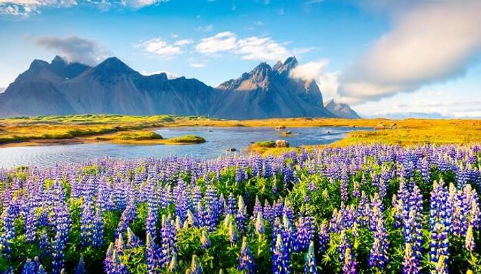

Summer is waiting for you!
Shillong – Meghalaya (15°C)

Shillong was capital for composite Assam during the British regime and later till a separate
State of Meghalaya was
formed. David Scott, the British civil servant of the East India Company,
was the Agent of the Governor-General North
East Frontier. During the First Anglo-Burmese War
the British authorities felt the need for a road to connect Sylhet
and Assam. The route was to
traverse across the Khasi and Jaintia Hills.
Ideal For- Honeymooners, nature lovers, Nature enthusiasts, culture vulture, Boating.
Things to do - Nature viewing, trekking, boating.
Attractions - Umiam Lake, a mesmerizing man-made reservoir, is located at a distance of
15 kilometres north of
Shillong which is the capital of the north-eastern Indian state of Meghalaya.
Hostels to stay - Hotel Polo Towers, The Habitat Shillong.
Marrakech, Admire Bucolic Nature
Marrakesh, a former imperial city in western Morocco, is a major economic center and home to mosques, palaces
and gardens. The medina is a densely packed, walled medieval city dating to the Berber Empire, with mazelike
alleys
where thriving souks (marketplaces) sell traditional textiles, pottery and jewelry.
Weather- 46 °C, Wind NW at 10 km/h, 13% Humidity
Things to do - Nature walks, bird watching.
Attractions - Many people associate the thousand-year-old city of Marrakech with labyrinthine alleyways.
Hostels to stay - Green Embassy Hotel
Tahiti, A Sweeter Place

French Polynesia, an overseas collectivity of France, comprises more than 100 islands in the South Pacific,
stretch
for more than 2,000km. Divided into the Austral, Gambier, Marquesas, Society and Tuamotu archipelagos,
they're
known for their coral-fringed lagoons and over-the-water bungalow hotels
Ideal For- Nature lovers, honeymooners
Things to do - Nature Look, Ocean, Boating.
Attractions - Ocean.
Hostels to stay - Tiki Hotel, Hotel Sarah nui.
Whistler, Traverse The Hiking Trails

Whistler is a town north of Vancouver, British Columbia, that's home to Whistler Blackcomb, one of the largest ski
resorts in North America. Besides skiing and snowboarding, the area offers snowshoeing, tobogganing and ski
jumping at
the Olympic Park,a venue for the 2010 Vancouver Winter Olympics.
Weather- 12 °C, Wind W at 2 km/h, 81% Humidity
Things to do - Skiing, Art ans Nature
Attractions - Peak to Peak Gondala.
Hostels to stay - Whisler lodge Hostel
New Zealand, Scenic Landscapes
New Zealand is an island country in the southwestern Pacific Ocean. It consists of two main landmasses,the
North
Island and the South Island —and more than 700 smaller islands, covering a total area of 268,021 square kilometres.
Ideal For- Nature lovers, honeymooners
Things to do - Nature walks, bird watching, Ocean
Attractions - Fiordland National Park and Milford Sound, South Island, Bay of Islands, North Island
Hostels to stay - Wellington
Teton County, Soothe Your Eyes With Greenery
Teton County is a county in the U.S.state of Wyoming.As of the 2010 United States Census, the population was
21,294.
Its county seat is Jackson. Its west boundary line abuts the east line of the state of Idaho.
Ideal For- Nature lovers, National Park
Things to do - Nature walks, bird watching
Attractions - Gibbon Falls · Grand Loop Road Historic District · Grand Targhee Resort · Grand Teton Music Festival ·
Grand Teton National Park
Hostels to stay - Calteda, Signal Mounted Lodge